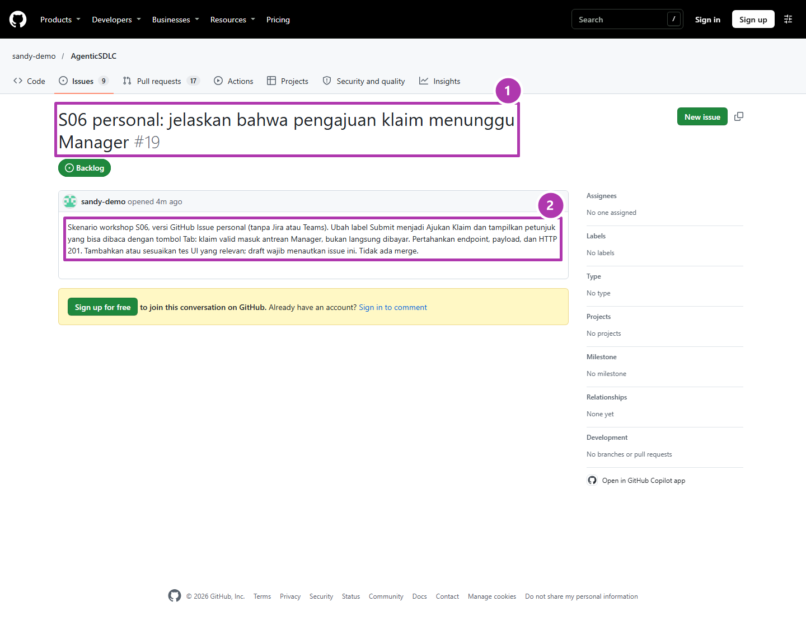
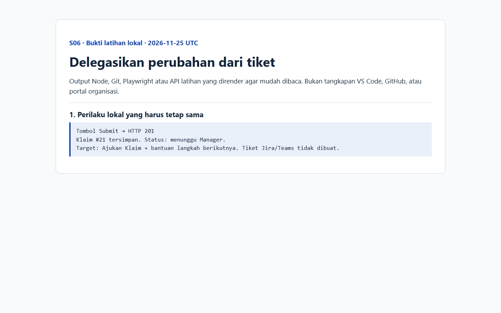
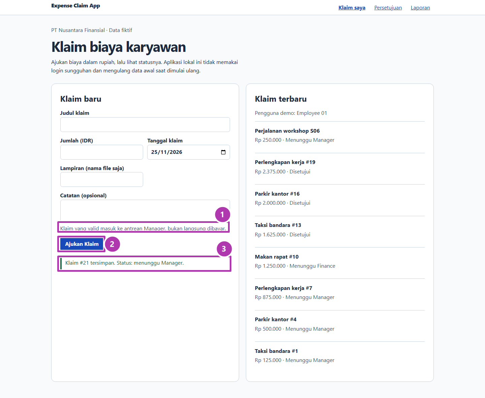
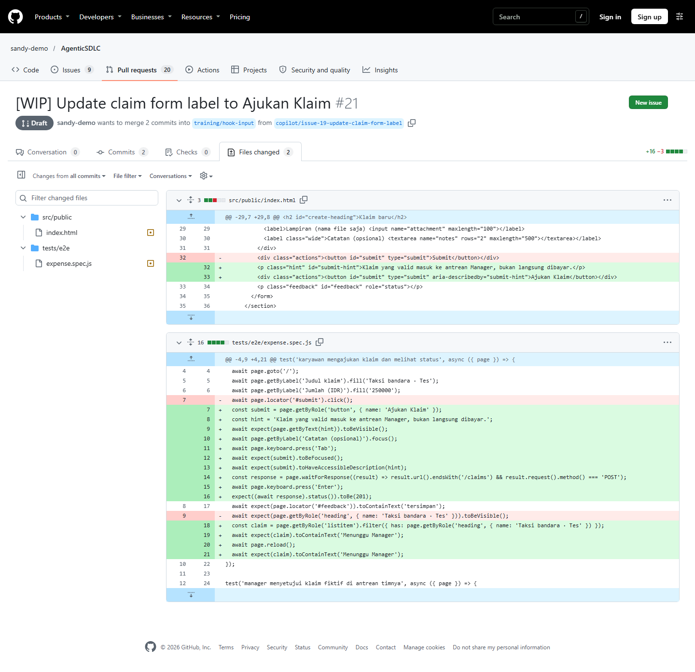

S06 · Level 2 — Delegasi asinkron
Delegasikan perubahan dari tiket
Delegasikan dari Jira/Teams bila konektor organisasi tersedia. Versi personal memakai GitHub Issue.
Status latihan: Versi GitHub Issue personal selesai diuji · versi Jira/Teams tetap manual/org. Ikuti langkah · Cek hasil · Langkah live · Ulangi dari awal.
Masalah yang dihadapi
Lina ingin mengganti label Submit, tetapi tiket kecil ikut antre sprint.
Kerugian: PM harus bolak-balik antara tiket dan PR untuk melihat status.
Masalah pada baseline
src/public/index.html
Lihat potongan atau catatan sumber
<button id="submit" type="submit">Submit</button>Solusi dan alur
Delegasikan dari Jira/Teams bila konektor organisasi tersedia. Versi personal memakai GitHub Issue.
Alur kerja ringkas
PM · Buat tiket dengan acceptance criteria
Hasil: Versi personal memakai issue #19; Jira dan Teams memerlukan konektor organisasi.
Copilot · Tautkan draft #21
Hasil: Label menjadi Ajukan Klaim dan petunjuk dapat dibaca dengan keyboard. API tidak diubah.
Employee · Tekan Tab dan Enter
Hasil: HTTP 201 dan menunggu Manager, bukan pembayaran langsung.
- Tunjuk tombol yang mau diganti. Buka :3000 dan cari (1) Submit. Isi judul Tiket label Submit, jumlah 250000, tanggal hari ini. Klik dan periksa pesan klaim tersimpan (201). Ini baseline, bukan hasil tiket.
- Tulis perubahan kecil pada tiket. Di Jira/Teams latihan gunakan konektor organisasi hanya bila tersedia; versi personal pakai GitHub Issues → New issue. Minta label Ajukan Klaim dan petunjuk “Klaim akan ditinjau Manager.” Targetnya src/public/index.html, bukan logika simpan.
- Tinjau perubahan dengan keyboard. Di draft PR, cari file HTML pada Files changed. Versi sesudah harus punya label baru, fokus Tab terlihat, Enter tetap mengirim klaim sekali, dan draft PR tertaut ke tiket. Belum direkam.
- Ikuti tautan dari tiket ke draft. Tautkan issue #19 dengan draft #21. Dari Files changed ikuti perubahan label dan aria-describedby, bukan perubahan endpoint.
- Ulangi dari keyboard. Isi judul Perjalanan workshop S06, Rp250.000 dan tanggal hari ini. Pindah dari Catatan ke Ajukan Klaim dengan Tab, lalu tekan Enter.
Langkah demo
Tunjuk tombol yang mau diganti
Buka :3000 dan cari (1) Submit. Isi judul Tiket label Submit, jumlah 250000, tanggal hari ini. Klik dan periksa pesan klaim tersimpan (201). Ini baseline, bukan hasil tiket.
npm run demo:before Perbesar S06-before-annotated.png
Perbesar S06-before-annotated.pngv0-baseline · dianotasi · Nomor 1 menandai tombol Submit yang menjadi target tiket. Tulis perubahan kecil pada tiket
Di Jira/Teams latihan gunakan konektor organisasi hanya bila tersedia; versi personal pakai GitHub Issues → New issue. Minta label Ajukan Klaim dan petunjuk “Klaim akan ditinjau Manager.” Targetnya src/public/index.html, bukan logika simpan.
issues/S06.md
Perbesar S06-01-ticket-annotated.pngSumber GitHub · 1. Pastikan judul menandai S06 personal. · 2. Minta petunjuk keyboard dan HTTP 201 tetap. Bukan tiket Jira/Teams. Tinjau perubahan dengan keyboard
Di draft PR, cari file HTML pada Files changed. Versi sesudah harus punya label baru, fokus Tab terlihat, Enter tetap mengirim klaim sekali, dan draft PR tertaut ke tiket. Belum direkam.
npm run e2e
Perbesar S06-local-result.pngOutput lokal yang dirender · bukan layar portal · Output pemeriksaan lokal S06: Perilaku lokal yang harus tetap sama. Ikuti tautan dari tiket ke draft
Tautkan issue #19 dengan draft #21. Dari Files changed ikuti perubahan label dan aria-describedby, bukan perubahan endpoint.
https://github.com/sandy-demo/AgenticSDLC/pull/21/files Perbesar S06-02-pr-annotated.png
Perbesar S06-02-pr-annotated.pngSumber GitHub · 1. Buka src/public/index.html di Files changed. · 2. Petunjuk menjelaskan antrean Manager, dengan relasi ke tombol untuk pembaca layar. Ulangi dari keyboard
Isi judul Perjalanan workshop S06, Rp250.000 dan tanggal hari ini. Pindah dari Catatan ke Ajukan Klaim dengan Tab, lalu tekan Enter.
git fetch origin copilot/issue-19-update-claim-form-label npm run demo:compare -- 40a3108d987c79cfcb51bde1e91293d0177ef309
Perbesar S06-after-annotated.pngScreenshot aplikasi lokal draft #21 · 40a3108 · 1. Baca petunjuk. · 2. Tab ke Ajukan Klaim dan Enter. · 3. Status menunggu Manager; Playwright memeriksa HTTP 201.


Cek hasil
Tiket #19 dan draft #21 nyata. Tab mencapai tombol Ajukan Klaim dengan petunjuk; Enter mengirim klaim dengan HTTP 201 dan status menunggu Manager. Ini bukan uji konektor organisasi.
Bukti latihan terverifikasi
Langkah live
Prasyarat dan petunjuk pengambilan bukti
Untuk Jira atau Teams, pemilik tenant menyiapkan konektor latihan dengan izin yang benar. Bukti ini menyelesaikan versi personal, bukan integrasi org.
Tidak ada target bukti live yang belum direkam.
Sebelum dan sesudah
Geser pembanding atau gunakan tombol panah pada kontrol. Kedua gambar bisa dibuka terpisah.

| Bagian | Sebelum | Sesudah / target |
|---|---|---|
| Perilaku | Form menampilkan Submit; klik tetap menyimpan klaim (201). | Target: Ajukan Klaim dan petunjuk status berikutnya; tiket organisasi dan perubahan UI belum ada. |
| Bukti visual | Ada tangkapan lokal. | Ada tangkapan lokal. |
| Keputusan | Peserta membaca keadaan awal. | Manusia memeriksa hasil sebelum meneruskan. |
Manfaat
- PM tahu perubahan mana yang benar-benar sedang ditinjau.
Bukti dan sumber
Template issue S06 · Data latihan dan pengukuran.
 Perbesar S06-before.png
Perbesar S06-before.pngBukti GitHub live
Alur GitHub Issue personal menghasilkan draft dan UI nyata. Konektor Jira/Teams tidak dipakai.
 Perbesar S06-01-ticket.png
Perbesar S06-01-ticket.png

Perbesar S06-02-pr.pngPerbesar S06-02-pr-annotated.pngUlangi latihan
Berhenti dari terminal server dengan Ctrl+C; jalankan npm run demo:before lagi. Data demo kembali ke seed; tidak ada perubahan ke GitHub.
npm run reset
npm run demo:before